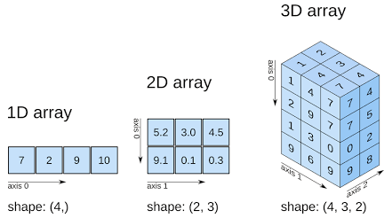

Усі програми, які ми писали досі, працювали з невеликою кількістю інформації. Але для практичних застосувань нам часто потрібно опрацьовувати велику кількість даних — результати щохвилинного вимірювання температури за рік, проаналізувати бали ЗНО тисяч учнів або створити систему розпізнавання облич, де кожна картинка складається з мільйонів кольорових пікселів. Якщо обробляти такі гігантські обсяги числових даних за допомогою звичайних списків та циклів for , програма працюватиме надто повільно. Для швидкої, зручної та професійної роботи з числами у Python існує спеціальна бібліотека — NumPy (скорочення від *Numerical Python).
Звичайні списки Python (list) достатньо потужні та гнучкі: всередині одного списку можна одночасно зберігати числа, текст, словники та інші списки. Проте за цю гнучкість доводиться платити швидкістю, оскільки елементи списку можуть мати будь-який тип, Python змушений перевіряти тип кожного окремого елемента під час обчислень, а це коштує часу.
NumPy працює зовсім інакше. Він зберігає дані у вигляді спеціальних структур даних — масивів.
Масив NumPy — сукупність однорідних значень, які обов'язково мають однаковий тип даних (наприклад, лише цілі числа або лише дробові) та розміщуються в пам'яті комп'ютера суцільним блоком, що дозволяє процесору обробляти їх у десятки й сотні разів швидше, ніж звичайні списки.
Оскільки NumPy — це стороння бібліотека, її спочатку потрібно імпортувати (як ми вже робили для інших модулів). Загальноприйнятим стандартом є імпорт NumPy під коротким псевдонімом np. Усі приклади в цьому розділі оформлені як звичайні скрипти — саме так, як ви й будете писати та запускати їх на практиці:
import numpy as np
Після цього рядка всі команди бібліотеки ми викликатимемо через коротке np..
Псевдонім
np— це лише домовленість, а не обов'язкова вимога Python. Але майже весь код на NumPy, який ви зустрінете (документація, форуми, підручники), використовує самеnp.
Основний інструмент бібліотеки — це об'єкт ndarray (N-мірний масив). Створити його найпростіше на основі звичайного списку за допомогою команди np.array():
import numpy as np
my_list = [2, 4, 6, 8]
numbers = np.array(my_list)
print(numbers)
🖥 Результат:
[2 4 6 8]
Зверніть увагу на невелику, але важливу деталь: на відміну від виведення звичайного списку, між числами масиву NumPy немає ком.
N-мірний масив — структура даних, у якій для доступу до конкретного елемента потрібно вказати $N$ індексів (координат, $N$ — це кількість вимірів чи осей) .
У NumPy такі масиви представлені об'єктом класу ndarray (що буквально розшифровується як N-dimensional array). Кількість вимірів масиву в NumPy називають осями (axes), а їх кількість — рангом (rank) або властивістю .ndim.

Одновимірний масив (або вектор) — це простий рядок чисел. Кожне число має свій індекс, який починається з 0, точно як у звичайному списку.
Робота з елементами одновимірного масиву дуже схожа на роботу зі списками:
import numpy as np
temps = np.array([18.5, 20.1, 19.0, 22.4])
print(temps[0])
temps[2] = 19.5
print(temps)
🖥 Результат:
18.5
[18.5 20.1 19.5 22.4]
Якщо об'єднати кілька рядків чисел разом, ми отримаємо двовимірний масив — це звичайна математична матриця або таблиця, яка має рядки та стовпці. Щоб створити двовимірний масив, ми передаємо в np.array() список, який складається з інших списків:
import numpy as np
matrix = np.array([
[10, 11, 12], # Рядок 0
[8, 9, 10] # Рядок 1
])
print(matrix)
🖥 Результат:
[[10 11 12]
[ 8 9 10]]
Щоб дістати конкретне число, у квадратних дужках вказують спочатку номер рядка, а потім через кому — номер стовпця: [номер_рядка, номер_стовпця].
import numpy as np
matrix = np.array([
[10, 11, 12],
[8, 9, 10]
])
print(matrix[0, 2])
print(matrix[1, :])
print(matrix[:, 1])
🖥 Результат:
12
[ 8 9 10]
[11 9]
Символ : без чисел навколо означає «усі елементи цього виміру». Так, matrix[1, :] повертає весь рядок 1, а matrix[:, 1] — увесь стовпець 1 (тут, наприклад, оцінки всіх учнів за другий предмет).
Окрім ручного введення чисел через np.array(), NumPy має команди для автоматичного створення заготовок:
np.zeros(кількість) — створює масив, заповнений нулями;np.ones(кількість) — створює масив, заповнений одиницями;np.full(кількість, число) — заповнює масив вказаним числом;np.eye(розмір) — створює одиничну матрицю (одиниці по діагоналі, решта нулі).import numpy as np
print(np.zeros(5))
print(np.full((2, 3), 7))
🖥 Результат:
[0. 0. 0. 0. 0.]
[[7 7 7]
[7 7 7]]
Дві інші дуже вживані команди дозволяють генерувати послідовності чисел без ручного їх переліку:
np.arange(від, до, крок) — генерує послідовність (як вбудована функція range(), розглянута в Розділі 6 «Цикли», але вміє працювати з дробовими кроками);np.linspace(від, до, скільки_чисел) — рівномірно розрізає вказаний проміжок на потрібну кількість точок. Це особливо зручно для побудови майбутніх графіків.import numpy as np
print(np.arange(0, 1, 0.2))
print(np.linspace(0, 10, 5))
🖥 Результат:
[0. 0.2 0.4 0.6 0.8]
[ 0. 2.5 5. 7.5 10. ]
Увага. У
np.arange(), як і вrange(), верхня межа не включається до результату. Уnp.linspace(), навпаки, обидві межі (від і до) включаються — саме тому в прикладі вище останнє число дорівнює рівно10., а не якомусь наближеному значенню.
Уявіть, що у вас є список цін у гривнях і ви хочете збільшити кожну ціну на 5 гривень. У звичайному Python вам довелося б написати цикл for. У NumPy арифметичні операції виконуються миттєво над усім масивом одразу, без жодних явних циклів. Це називається векторизацією.
import numpy as np
prices = np.array([10, 20, 30, 40])
print(prices + 5)
print(prices * 3)
🖥 Результат:
[15 25 35 45]
[ 30 60 90 120]
Якщо два масиви мають однаковий розмір, обчислення відбуваються попарно — елемент з елементом на однакових позиціях:
import numpy as np
a = np.array([1, 2, 3])
b = np.array([10, 20, 30])
print(a + b)
print(a * b)
🖥 Результат:
[11 22 33]
[10 40 90]
Бібліотека містить власні швидкі версії математичних функцій, які так само застосовуються одразу до кожної комірки масиву:
import numpy as np
numbers = np.array([4, 9, 16])
print(np.sqrt(numbers))
🖥 Результат:
[2. 3. 4.]
Так само доступні np.sin(), np.cos(), np.log() та багато інших.
Після проведення розрахунків нам зазвичай потрібні не всі окремі числа, а підсумкові показники. Для цього існують вбудовані статистичні функції:
np.sum() — рахує загальну суму всіх чисел;np.mean() — обчислює середнє арифметичне значення;np.max() / np.min() — знаходять найбільше та найменше число;np.std() — обчислює стандартне відхилення (показує, наскільки сильно числа відрізняються від середнього значення, тобто чи є результати стабільними).import numpy as np
grades = np.array([10, 12, 9, 11, 8, 12])
print(np.mean(grades))
print(np.max(grades))
🖥 Результат:
10.333333333333334
12
Створіть масив температур за тиждень [15, 17, 19, 22, 20, 18, 16], потім перетворіть їх усі за один крок у шкалу Фаренгейта за формулою $F = C \cdot 1{,}8 + 32$ і знайдіть середню температуру тижня у градусах Фаренгейта за допомогою np.mean().
Кожен масив NumPy має кілька важливих характеристик, які можна дізнатися в будь-який момент. Зверніть увагу: після них дужки () не ставляться, оскільки це не методи, а атрибути об'єкта:
.shape — форма масиву. Повертає кортеж із розмірами: (кількість,) для одновимірного масиву, (рядків, стовпців) для двовимірного;.dtype — тип даних, які зберігаються всередині (наприклад, int64 — цілі числа, float64 — дробові);.size — загальна кількість усіх елементів масиву;.ndim — кількість вимірів (1 для лінійного масиву, 2 для таблиці).import numpy as np
matrix = np.array([[1, 2, 3], [4, 5, 6]])
print(matrix.shape)
print(matrix.dtype)
🖥 Результат:
(2, 3)
int64
.reshape()Ви можете легко перегрупувати елементи масиву, змінивши його «зовнішній вигляд» — наприклад, перетворити довгий одновимірний рядок із 6 чисел на таблицю з 2 рядків та 3 стовпців. За це відповідає метод .reshape():
import numpy as np
flat_array = np.array([1, 2, 3, 4, 5, 6])
grid = flat_array.reshape(2, 3)
print(grid)
🖥 Результат:
[[1 2 3]
[4 5 6]]
np.concatenate((масив1, масив2)) — з'єднує два або більше масивів в один;np.split(масив, кількість) — розрізає масив на кілька рівних частин.import numpy as np
a = np.array([1, 2])
b = np.array([3, 4])
print(np.concatenate((a, b)))
🖥 Результат:
[1 2 3 4]
Зрізи дозволяють взяти потрібний шматочок із великого масиву за тим самим правилом [початок:кінець], яке ми вже бачили для списків та рядків (Розділ 11 «Більше про рядки»).
В одновимірних масивах зрізи працюють так само, як у списках:
import numpy as np
numbers = np.array([10, 20, 30, 40, 50])
print(numbers[1:4])
🖥 Результат:
[20 30 40]
У двовимірних масивах ми можемо вирізати цілі підтаблиці, вказуючи зріз для рядків та стовпців через кому:
import numpy as np
matrix = np.array([[10, 11, 12], [8, 9, 10]])
sub_matrix = matrix[0:2, 1:3]
print(sub_matrix)
🖥 Результат:
[[11 12]
[ 9 10]]
Уявіть, що з масиву оцінок класу нам потрібно вибрати лише ті, які є високими (більше або дорівнюють 10). NumPy дозволяє зробити це елегантно за допомогою логічних масок.
Якщо застосувати умову порівняння до всього масиву, NumPy поверне новий масив, повністю заповнений логічними значеннями True або False:
import numpy as np
grades = np.array([9, 12, 8, 10, 11])
mask = grades >= 10
print(mask)
🖥 Результат:
[False True False True True]
Тепер, якщо передати цю маску всередину квадратних дужок нашого масиву, NumPy залишить лише ті числа, для яких відповідне значення маски дорівнює True:
high_grades = grades[grades >= 10]
print(high_grades)
🖥 Результат:
[12 10 11]
Логічну маску можна записувати і напряму, без проміжної змінної:
grades[grades >= 10]. Ми показали вам запис через зміннуmaskвище лише для того, щоб продемонструвати, як саме вона виглядає зсередини.
Модуль random бібліотеки NumPy (не плутати зі стандартним модулем random з Розділу 9 «Модулі», хоч вони і схожі за призначенням) уміє миттєво генерувати цілі масиви випадкових даних:
np.random.randint(від, до, size=розмір) — створює масив випадкових цілих чисел заданого розміру;np.random.random(розмір) — створює масив випадкових дробових чисел від 0.0 до 1.0.import numpy as np
print(np.random.randint(1, 13, size=5))
🖥 Результат:
[ 7 12 3 9 1]
Оскільки числа випадкові, у вас на екрані з великою ймовірністю з'являться зовсім інші значення — це нормально.
Щоб результати складних обчислень не зникли після завершення програми, NumPy має власний надшвидкий бінарний формат для збереження масивів на диск:
import numpy as np
data = np.array([1.5, 2.3, 4.8])
# Зберегти у файл з розширенням .npy
np.save("my_data.npy", data)
# Завантажити назад у програму під час наступного запуску
loaded_data = np.load("my_data.npy")
print(loaded_data)
Якщо дані потрібно передати в іншу програму (наприклад, відкрити таблицю в Excel), масиви можна зберігати у звичайні текстові файли, де числа розділені комами або пробілами, за допомогою функцій np.savetxt() та np.loadtxt():
import numpy as np
matrix = np.array([[10, 11, 12], [8, 9, 10]])
# Збереження у текстовий файл
np.savetxt("matrix.txt", matrix)
# Зчитування числових даних із текстового файлу прямо в масив NumPy
new_matrix = np.loadtxt("matrix.txt")
print(new_matrix)
Головна цінність масивів NumPy полягає в тому, що вони можуть бути використані для побудови графіків у бібліотеці Matplotlib, яку ми розглянемо в одному з наступних розділів. Подивіться, як за допомогою linspace() та синуса NumPy можна підготувати ідеальні координати точок для малювання математичного графіка:
import numpy as np
import matplotlib.pyplot as plt # Підключаємо малювальник графіків
# Крок 1: створюємо 100 точок на осі X від 0 до 10.
x = np.linspace(0, 10, 100)
# Крок 2: обчислюємо синус для кожної точки (вісь Y).
y = np.sin(x)
# Крок 3: передаємо масиви NumPy малювальнику.
plt.plot(x, y)
plt.show() # На екрані з'явиться плавна синусоїда!
1. Спроба обчислити масиви різної форми.
import numpy as np
a = np.array([1, 2, 3])
b = np.array([10, 20])
print(a + b)
🖥 Результат:
Traceback (most recent call last):
File "script.py", line 5, in <module>
print(a + b)
ValueError: operands could not be broadcast together with shapes (3,) (2,)
Причина: комп'ютер не знає, з яким елементом масиву b додавати третій елемент масиву a. Додавати та множити масиви можна лише тоді, коли їхні розміри повністю збігаються (або сумісні за правилами broadcasting[^2], які виходять за межі цього розділу).
Як виправити: переконайтеся, що обидва масиви мають однакову форму (.shape), перш ніж виконувати операцію.
2. Забути передати список у квадратних дужках.
import numpy as np
arr = np.array(1, 2, 3, 4)
🖥 Результат:
Traceback (most recent call last):
File "script.py", line 3, in <module>
arr = np.array(1, 2, 3, 4)
TypeError: array() takes from 1 to 2 positional arguments but 4 were given
Як виправити: числа обов'язково мають бути оформлені як єдиний список усередині дужок: np.array([1, 2, 3, 4]).
3. Забути, що більшість функцій NumPy повертають новий масив, а не змінюють початковий.
import numpy as np
temps = np.array([18.5, 20.1, 19.0])
print(temps + 1)
print(temps) # temps залишився незмінним!
🖥 Результат:
[19.5 21.1 20. ]
[18.5 20.1 19. ]
Як виправити: якщо результат потрібен надалі, збережіть його у змінній: temps = temps + 1.
Ви отримали масив оцінок учнів класу за контрольну роботу:
grades = np.array([8, 10, 11, 7, 12, 9, 6, 11, 10, 12])
Напишіть програму, яка обчислює та виводить:
np.mean());>= 10), за допомогою логічної маски та функції len() або атрибута .size.Згенеруйте за допомогою функції np.random.randint() масив із 30 чисел, які відображають денну температуру у травні (у діапазоні від 15 до 28 градусів).
np.std()), щоб зрозуміти, чи були різкі стрибки погоди..reshape(5, 6) у п'ять робочих тижнів місяця (таблицю) і виведіть на екран перший тиждень (рядок 0).Спортсмен бігає 4 дні на тиждень і фіксує дистанцію, яку він пробіг, у кілометрах. Маємо таблицю (двовимірний масив 3×4) для трьох тижнів тренувань:
dist = np.array([
[5.1, 4.8, 6.0, 5.5], # Тиждень 1
[5.5, 6.2, 5.8, 6.5], # Тиждень 2
[6.0, 6.5, 7.0, 7.2] # Тиждень 3
])
Напишіть код, який:
dist > 6.0, щоб дізнатися і вивести всі успішні забіги, де дистанція була більшою за 6 кілометрів.